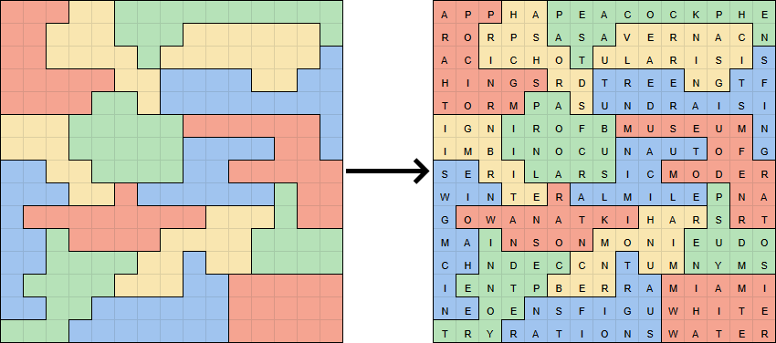
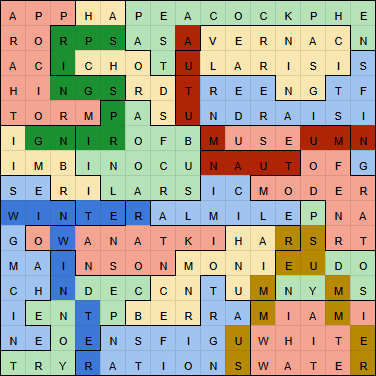

Solution: The Four Season Theorem
Answer: SALT
Written by chimpaznee, empyreu, and Enia
This solution page contains the answers to all of the feeders in the Seasons round, and the author's notes discuss other aspects of several of them.
This metapuzzle uses all 16 answers from the Seasons round.
From looking up "four...theorem" or recognizing it, we must realize that the rules of the Four Colour Theorem apply here - the grid is to be colored such that no two adjacent regions have the same colour, and it is possible to do this with four colours. Still, the puzzle is far from uniquely solvable in this state, and we will need the answers. We can observe that there are four puzzles from each season, and the answer lengths can be matched with the region sizes, which means that we will need to fill in four regions with each season's colours. We can use the answer lengths to further determine what options exist for each region. (e.g. an answer of length 10 will go in one of the two size 10 regions. Likewise, if we have both length 10 answers, we can narrow down the options for the size 10 regions to the answers' two seasons). Additionally, in order for the solution to be unique, we may need to assume that there are no two answers from the same season that have the same length. Otherwise, it will be ambiguous which answer is assigned to which region.
With this length constraint, it is possible to find a unique solution even with a few answers missing, but without it, there's still a unique solution for certain subsets that contain the vast majority of answers. By using the answer lengths, combined with which season each answer came from, we should find the one way to colour (season?) the grid. After solving the logic puzzle, the answers can be entered into their respective regions in reading order:

After filling in the answers, we can proceed to stare at the result!
With the flavour text mentioning the season fragments, and the overall season theme of this round, we should try to look for seasons in the resulting grid. And indeed, the seasons can be found in the grid, wordsearch-style, though most of them twist around. The easiest one to notice is probably "WINTER" which reads in a straight line in row 9.
After carefully searching, we should be able to find 2 occurrences of each season, with each pair of occurrences of the same season being adjacent:

The newly-found seasons take the shapes of letters. Reading these, in the seasons' order, they spell out the final answer, the seasoning SALT.
Author’s Notes
(written by chimpaznee)
This was the first puzzle written for this hunt.
The earliest version of this meta has been written all the way back in May 2021, while we were brainstorming themes for a puzzle hunt. The Four Seasons theme was suggested early, and we all liked it. This meta was originally intended for a different project than Exploring the Countryside, which was eventually abandoned. On February 3, 2022, we decided to re-use this meta in some form for a new puzzle hunt, and thus this hunt was born.
On the construction of this meta:
The grid and list of answers have seen many alterations. The earliest version had excellent answers such as "PLACE UNDER MAGMA" and "WITHOUT OXYGEN", but after testing it, we managed to alter it to include a more accepable list of answers, and then started writing puzzles.
The second major alteration came when we decided to re-appropriate this meta for Exploring the Countryside. In February 2022, while testing it out, we noticed a couple of letter shapes that were not ideal, as well as a couple of red herrings. We then made minor changes to the grid and finalized the list of answers. We did decide to also give authors a bit of liberty when choosing an answer, with only the letters used by the seasons being set. We'd also reject answers that created red herrings. For example, we originally wanted to use the answer INTERACTIVE ART in place of INDECENT POETRY, but that resulted in an alternative, and undesirable, way to find "WINTER" on the grid.
However, some ambiguities have still slipped through. For example, there was still an alternative path for the second "winter", and an ambiguity for the second "autumn", which haven't been checked carefully enough. Fortunately, we managed to get rid of these by changing the shape of the grid, and only one answer has been changed - the answer for Star Accommodations, which luckily was among the easiest puzzles to apply last-minute changes to. (this was at the point where most puzzles have already been written.)
On the construction of the feeders:
We have set ourselves an additional construction constraint: Since knowing the answer length alone is almost as helpful as knowing the actual answers, we decided that most of the answer lengths in the Seasons round should not be immediately apparent, by using cluephrases or other things that are not one-to-one extractions. Most of the puzzles in the Seasons round ended up following this constraint in some form (or trying), with the sole exception of Unreal Estate.